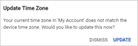

To edit account details, click Account at the bottom of the side menu and select My Account.
Note: Ensure the fields you want to update are on your layout, and for email and home addresses ensure the system setting 'Allow Portal/myCority users to change their email and home address information' is selected.
Basic
The photo, Full Name, and User Name reflect what is entered in the employee record in the Cority GX2 platform.
Select your preferred Date Format and Time Format.
The Current Time Zone displays the current time zone for your location, which must match the time zone selected on your device. If the time zones do not match, you will be prompted to update your myCority time zone.

Email and Language
Email Address: This is the address defined in your employee record; enter a different email address, if necessary.
Language: This is the language used in myCority for all captions, text, etc. Select a different language if necessary.
Offline PIN: Enter a 4-6-digit PIN that you will enter to access Offline mode.
Address and Phone Number
This information comes from your employee record but you can add or change the fields as required.
Health Centers
Health Center, Health Center Address, and Health Center Phone Number: This information reflects the primary health center defined in your employee record and cannot be changed. When you create a new conversation, you will be able to choose from users at this health center.
If you expect to need to correspond with practitioners at another location, select a Secondary Health Center. The Secondary Health Center Address and Secondary Health Center Phone Number are populated from the database and cannot be changed. When you create a new conversation, you will be able to choose from users at both your primary and secondary health center.
If you want to be able to schedule appointments at your secondary health center, select the Use Secondary Health Center checkbox. You will not be able to schedule appointments at your primary health center.